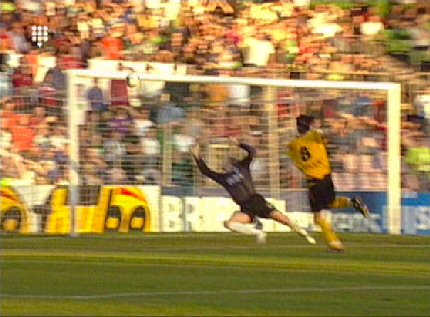
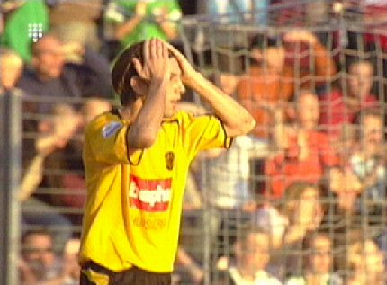

|
FC
Groningen - Roda JC (1-0) 30 oktober 2005
|
Hier passt Cissé de bal op Sergio (links). Het doelpunt dat hieruit valt wordt
afgekeurd wegens buitenspel.
Sergio snapt er niks van.
Kah kopt op de paal.
De gezichten van Senden en Kah zeggen genoeg...
Jol zag helaas een elleboog van Seedorf op Lachambre niet.
Het slachtoffer moest met een hoofdwonde van het veld om deze te laten
hechten.
Bodor is smerig onderuit geschoffeld waarop een opstootje volgt.
Roda speelde defensief met alleen Cissé als spits. Ondanks enkele goede
kansen was Groningen de ploeg met het meeste balbezit en met de meeste
overtredingen (42!). In de 78e minuut scoort Buijs 1-0. Stevens brengt dan
pas de aanvallers Cristiano en Derksen in het veld.

In de extra tijd schiet Vicelich vrij voor doel op de lat.

Na deze nederlaag zakt Roda weer naar het "rechter-rijtje".
© Koempels Pleasure Dome
|